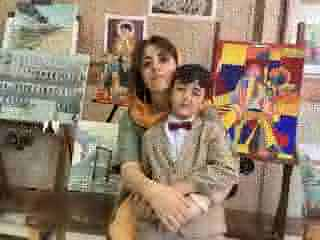
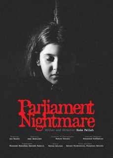
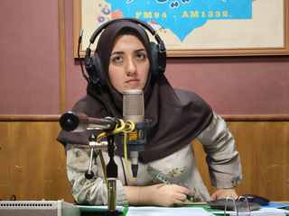

Burning Ship
30 × 40 cm · From Remnants of War
PORTFOLIO / 2026
Artist · Storyteller · Filmmaker · Radio Host
An Iranian interdisciplinary artist whose practice moves between painting, moving image, and voice. Her work is rooted in storytelling and often begins with images already present in public memory.
View selected work ↓
Hoda Fallah is an Iranian artist, writer, filmmaker, and radio host. Her practice moves across painting, live-action and puppet film, AI-assisted moving image, broadcasting, and teaching.
In her recent visual work, she frequently returns to real images: documentary footage, news photographs, and moments circulating through social media. Rather than adding a prescribed symbolic reading, she uses selection, framing, and repainting to hold the factual image in view.
Her film practice predates generative AI. It extends from live-action puppetry to contemporary AI-assisted cinema, while radio remains a parallel practice built around research, conversation, culture, cinema, and technology.
Documentary-based image practice.
Live-action, puppetry, and AI-assisted cinema.
Hosting, producing, writing, and public conversation.
AI content production and interdisciplinary practice.
ONGOING SERIES
باقیمانده از جنگ
Remnants of War is an ongoing painting series based on real images seen in documentary footage, news photographs, and viral social-media videos during wartime.
The force of these works lies not in symbolic invention, but in the fact that the moments really happened. Painting becomes a way of returning to public images—slowing them down without explaining them away.
30 × 40 cm · From Remnants of War
30 × 40 cm · Based on a real viral social-media video from wartime.
Oil on canvas · 30 × 40 cm · 1404 SH (2025/26)

CURRENT WORK
The series continues through paintings developed from specific public images and documented events. Current titles include:
Fallah's moving-image work spans live-action puppetry and AI-assisted cinema. The technology changes; the central practice remains writing, directing, constructing a world, and telling a story.

FIRST FILM · 1399 SH
مجلس کابوس
Fallah's first completed film is a 53-minute live-action puppet work. Made before her use of generative AI, it establishes an earlier strand of her filmmaking through writing, directing, performance, puppetry, and constructed worlds.

SHORT FILM · 2025
A short film rooted in Iranian memory and contemporary image culture, extending Fallah's narrative practice into generative moving image.
Selected recognition: AI International Film Festival, Los Angeles; AI Film Festival Japan.
IN PRODUCTION · 2026
An anti-war short centered on a classroom after Hiroshima, developed through AI-assisted animation and cinematic image-making.

RADIO HOST
Alongside her studio and film work, Fallah works in radio as a host, producer, and writer. Her public-media practice focuses on culture, cinema, and artificial intelligence, bringing research and conversation into accessible broadcast formats.
HODA FALLAH / PORTFOLIO
“I work across media, but the central act is the same: to find the story already present in an image, a voice, or a moment.”
CONTACT
hodafallah65@gmail.comFull CV, exhibition history, and additional works available on request.